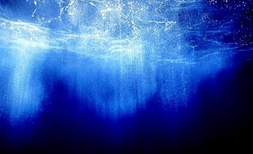
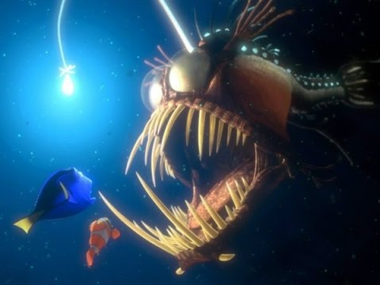

Ao se sentar em frente ao mar, já parou para imaginar o quão profundo o oceano é e quais mistérios ele esconde?
A superfície do nosso planeta é coberta por 71% de água no estado líquido, desta, 97,4% vem dos oceanos, resultando em aproximadamente 68% do planeta coberto pelas águas dos oceanos. Mais de dois terços do planeta são cobertos pelo oceano, e destes, 95% ainda é inexplorado por nós, seres humanos.
Curiosities

Challenger Deep
The Challenger depression is the deepest point of the ocean, more than 10,900 m below sea level. It is so deep that Everest would fit there and it would lack still be 2km to appear at sea level.

Exploration
The Challenger Deep was first time visited in 1960 by Jacques Piccard and Don Walsh. From there to here, only one other person went down there, the cine director James Cameron. The Challenger Deep was visited by only 3 people, while on the Moon more than 10 astronauts walked it.

Mysterious sounds
The National Oceanic and Atmospheric Administration (NOAA) undersea microphones have captured a list of mysterious sounds that resonate throughout the Pacific Ocean between late spring and early fall. To this day, it is unknown what the origin of these sounds is.
Animals

Giant squid
Until 2013, giant squid with more than 1 m were never observed in their natural habitat, in 1000m of depth. The giant squid was found in Japan, the animal was captured for analysis by researchers, but returned alive to the sea days later.

Anglerfish
The Anglerfish is one of the fish that live in the depths of the ocean. He became famous for appear in the movie "Finding Nemo". The Anglerfish has some adaptations to live in the depths, like a kind of antenna in the head with light in the tip that is used to attract its prey.
Obstacles

Pression
As the water is much denser than the air, every 10m below sea level, is added one more of an atmosphere of pressure. At 60m deep, a diver feels like seven atmospheres squeezing it, enough for the air of the pressurized cylinder to become toxic.

Brightness
Between 200m and 1000m deep, the sunlight completely disappears into the ocean. For those who dives in this depth, the best flashlight doesn't illuminates more than 25m around them.